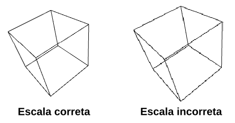

Pré-requisitos
Para acompanhar o curso de forma satisfatória é recomendável ter conhecimento prévio do conteúdo abordado nas disciplinas de Algoritmos e Estruturas de Dados I e Geometria Analítica.
As atividades práticas avaliativas serão desenvolvidas na linguagem C++. Embora não seja necessário ter fluência em C++, é recomendável ter proficiência em programação em C e familiaridade com conceitos básicos de programação orientada a objetos.
Também é recomendável ter familiaridade com o Git e ser capaz de gerenciar seus próprios repositórios.
Atividades práticas
Para realizar as atividades práticas é necessário ter um computador com sistema operacional 64 bits (Windows, Linux ou macOS) e placa de vídeo compatível com OpenGL 4.1 ou superior.
O OpenGL 4.1 é suportado em placas gráficas da família Nvidia GeForce 400 (2010) ou mais recentes, AMD Radeon HD 5000 (2009) em diante e Intel HD Graphics a partir dos processadores Intel de 7ª geração (2012).
Caso a sua placa de vídeo seja de uma geração a partir de 2012, provavelmente ela deve suportar OpenGL 4.1. Se não suportar, há a possibilidade de simular o processamento gráfico em software através do driver Gallium llvmpipe da biblioteca Mesa.
Visualizando este site
Parte do conteúdo deste site requer um navegador com suporte a WebGL 2.0.
Para informações detalhadas sobre o suporte do seu navegador a WebGL 2.0, consulte o WebGL Report.
Para garantir a visualização correta do conteúdo WebGL 2.0, utilize a versão mais recente do Mozilla FireFox ou Google Chrome. Além disso, use o navegador em um computador desktop ou laptop. Embora o site funcione em tablets e smartphones, pode ser difícil interagir com o conteúdo WebGL nesses dispositivos.
Dependendo das configurações de DPI utilizadas no sistema de janelas, podem ocorrer problemas de redimensionamento dos elementos de interface no Chrome e em navegadores baseados no Chromium, como o Microsoft Edge. Por exemplo, o cubo exibido acima pode ser redimensionado e as arestas podem apresentar distorções, parecendo mais serrilhadas que o normal:

No Chrome, isso geralmente é resolvido iniciando o navegador com a opção /high-dpi-support=1 /force-device-scale-factor=1 na linha de comando (ou incluindo essas opções no atalho), ou ajustando o zoom .
No momento da escrita deste texto, o Apple Safari não possui suporte a WebGL 2.0. Entretanto, o Safari Technology Preview tem o WebGL 2.0 habilitado por padrão e está disponível a partir do macOS Catalina.
Consulte em https://caniuse.com/webgl2 o suporte a WebGL 2.0 em diferentes navegadores.